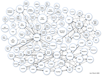

Politics, IT, Spending, and GIS¶
- date:
2010-03-31 00:17
- author:
admin
- category:
general, opinion
- tags:
australia, datalinking, gis, IT, politics, spending
- slug:
politics-it-spending-and-gis
- status:
published
 With an impending election in the UK, the Conservatives, the current opposition party have decided to try and win some votes by cutting spending in IT. On the upside they plan to scrap ID cards if elected. Which GIS projects this may affect is impossible to tell as:
He [the shadow chancellor] was unable to cite specific projects, as opposition parties are not allowed to inspect government contracts.
What would be ideal is if IT projects were able to be scrutinised by the opposition parties, and the public. It appears Australia is far more open with their government tenders, and even include the `actual costs <https://www.tenders.gov.au/?keyword=gis&event=public.advancedsearch.keyword&orderBy=Publish+Date&submitSort=Go>`__ involved which would be considered as extremely sensitive business data in other countries.
During the good times IT projects are always associated with savings and efficiencies. During the bad times they now seem to be seen as an extravagance, and prone to failure. A good point made in the comments on The Register article was:
Personally, I’d like all large businesses subject to the same auditing and publishing requirements that government IT projects are so we can get some perspective. Starting with the media. I strongly suspect that government projects are no worse than anyone else’s, but they’re the only ones open to serious scrutiny.
Amongst the projects likely to face cuts is the National Programme for IT a National Health Service IT project with a budget of around £12bn, that was set to be “the world’s biggest civil information technology programme.” Whether or not patients are likely to benefit is very much up for debate. What does seem to be lacking in this plan is the use of GIS and geospatial technologies, apparently due to a lack of expertise. Maybe ESRI should have sent the NHS their brochure.
Send me the Link¶
Where the government (or their advisors) may previously have FAILed is their desire for centralised databases and systems. This approach may have recently changed to a more decentralised linked data approach.
[Linked data] is about using URIs to identify things, providing information at the end of those URIs that is self-descriptive, and linking those things to other things through typed links.
Sean Gillies seems to think it’s a step in the right direction - which is always a good thing. Have a look at the new site to judge for yourselves. The use of linked data rather than databases in walled gardens, allows for all sorts of applications to be created by both the public and private sector such as this expenditure map (I’ll forgive the use of Flash just this once..). The amount of mash-ups that can be created is now only limited by the imagination. Notice how maps are high on the list of ideas.
A change that has occurred in the UK that could be seen as on a par with Obama’s health reforms is the freeing of data. Recently the Ordnance Survey released free mapping. This seems to have had a knock on effect with the Post Office relaxing copyright on postcodes (the zip code equivalent). Although it may have helped that this has been available for download on The Pirate Bay since last September. [Clarification - the Ordnance Surey have released the geographic locations of postcodes, but the Post Office have not released the database linking actual postal addresses to postcodes].
So even though the cuts to IT may have an impact if there is a change of government, the opening up of data will create far more opportunities to geospatial developers, who will now be able to build workable systems and prototypes using real data to proactively drive IT projects rather than wait for the high hand of government to possibly offer them some crumbs from the table.
- orphan:
Comments¶
1. Paul Steinberg **
I am developing on Vista Ultimate and found the program was operating system security settings. The User account could not write to mdb database.
Your gave me another place to look. Thanks
ReplyAdd Comment